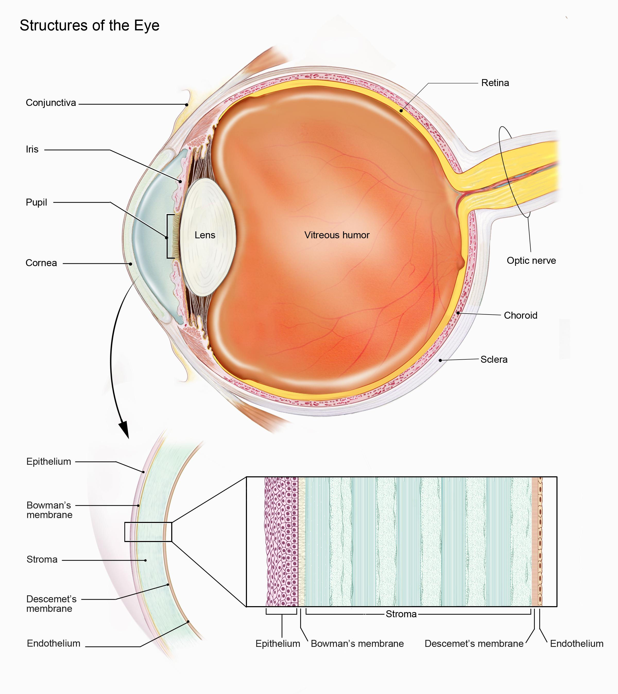
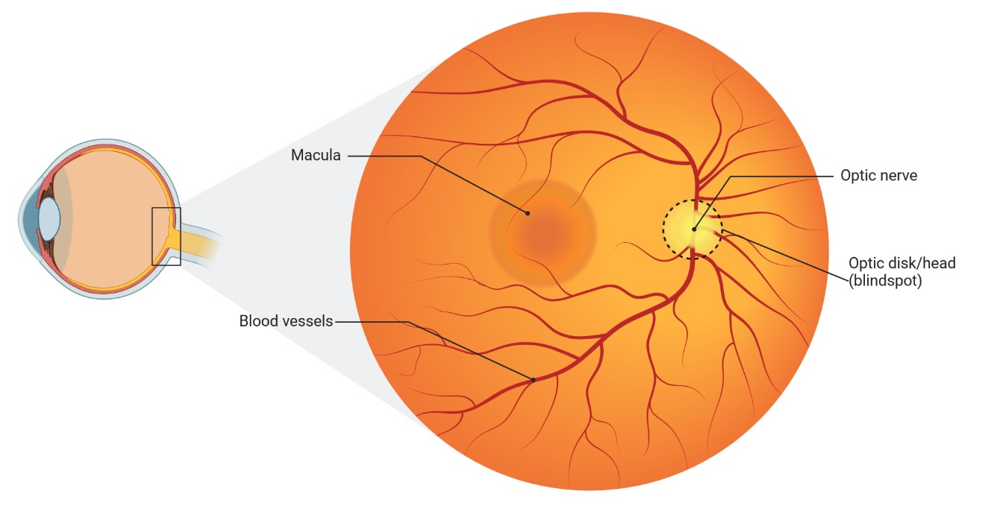
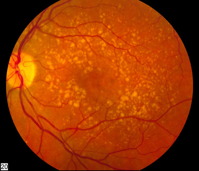

1 The Eye as a Window: Unveiling the Power of Retinal Imaging
1.1 Introduction: More Than Meets the Eye
The human eye, an intricate organ of visual perception, is often celebrated for its capacity to perceive the world around us. Yet, this remarkable organ holds far greater potential than solely enabling sight. It is a complex, living tissue – a veritable microcosm of the human body, with its own unique vascular and neural structure that provides a direct, non-invasive window into one’s overall health. As we dig into the capabilities of modern imaging techniques, particularly fundus photography, we begin to uncover a new paradigm in medicine, where the eye serves as a powerful diagnostic tool, extending far beyond the traditional confines of ophthalmology.
For centuries, the examination of the retina was limited to what could be observed using traditional ophthalmoscopy. While still a valuable technique, ophthalmoscopy requires specialized training, a skilled eye, and does not capture information in a way that can be easily stored or shared1. However, modern technology has brought forth non-mydriatic fundus cameras that, when coupled with artificial intelligence, have unlocked the hidden potential of retinal imaging. With these advancements, the subtle changes visible in retinal blood vessels and other structures of the eye can now be quantified and correlated with a wide range of systemic conditions, transforming the way we approach health assessment. This new vista into the body, seen through a single, relatively simple, non-invasive procedure, has the potential to revolutionize our approach to diagnostic medicine, preventative care, and a more personalized form of health management.
In this book, we embark on a journey to explore this exciting frontier. We will look at the emerging scientific evidence that supports the use of retinal fundus imaging in assessing general health, how these findings might translate to clinical or wellness settings, and finally we will explore future directions for this emerging field, as well as how Opticare is positioned to lead this change. By the end of this book, you will come to understand that, in the words of poet William Blake, “The eye sees more than the heart knows.”
1.2 The Retina: A Unique Microcosm of the Body
The retina, located at the back of the eye, is more than just a light-sensing tissue; it’s an extraordinary extension of the brain. Its formation during embryological development is closely intertwined with the central nervous system. Both the retina and the brain arise from the neural tube during embryogenesis, which results in shared biological pathways and common cell types. This close connection means that the retina is not merely a passive receiver of visual information, but an active extension of the central nervous system and can thus reflect the overall neural health of the body.
When medical professionals examine the eye, they look at what’s called the “fundus” – the interior surface of the eye opposite the lens that includes the retina, optic disc, macula, and posterior pole. The term “fundus” comes from Latin, meaning “bottom” or “base,” as it represents the back portion of the eye’s interior that can be visualized during an examination. When we refer to fundus photography or imaging throughout this book, we’re discussing the specialized photography of this internal back surface of the eye, which contains these critical structures that reflect both ocular and systemic health.

Structurally, the retina is a multi-layered membrane containing photoreceptor cells, interneurons, ganglion cells, and glial cells. These neurons are responsible for translating light signals into electrical impulses that are sent to the brain for processing. But perhaps more importantly for this discussion, the retina has an exquisite and highly vascularized network of microvessels. The retinal microvasculature, consisting of arterioles, capillaries, and venules, facilitates the delivery of nutrients and oxygen, essential for the high metabolic activity of retinal cells, and removal of metabolic waste products. The retinal microvascular system is highly accessible by non-invasive methods such as fundus photography. This vasculature is unique in its structure. Compared with other blood vessels, retinal vessels are readily visible and directly observable, and are not shielded by tissue or skin, making them a perfect model to study microvascular dysfunction. Retinal arterioles and venules are also quite sensitive to physiological changes and, given that they are a part of the larger circulatory system, can also reflect pathological processes in other organs.

In addition, the retina and the choroid are a high oxygen-consuming tissue, therefore its cells have a high susceptibility to cellular damage when the oxygen supply or metabolic waste product removal are impaired. Thus, it is unsurprising that a number of researchers have found links between retinal structure and a wide variety of systemic conditions. The close integration of the retinal blood supply with other neural tissue also makes it an ideal site to investigate the effects of systemic diseases such as diabetes, hypertension, heart disease and neurodegeneration. Taken together, the retina’s unique characteristics—its direct connection with the brain, its highly visible microvasculature, and its high metabolic activity—make it a powerful, non-invasive tool to assess overall systemic health.
1.3 Common Eye Pathologies: A Look Through the Fundus
While this book primarily focuses on the use of retinal imaging for assessing systemic health, it is also important to understand the common pathologies of the eye that are readily visible through fundus photography. These conditions, while traditionally assessed by ophthalmologists, are important to understand when reviewing retinal images. Awareness of these eye diseases can help clinicians understand when to make referrals, and also help illustrate the importance of using the retina for health assessments and diagnosis. Here we will explore several of the most frequently encountered ocular conditions that can be detected with fundus imaging:
Diabetic Retinopathy (DR): Diabetic retinopathy is a microvascular complication of diabetes and a leading cause of blindness worldwide. It occurs when high blood sugar levels cause damage to the small blood vessels in the retina, leading to a cascade of pathological changes. The earliest signs of DR include microaneurysms (small dilations of the capillaries), haemorrhages (blood leaking from damaged vessels), and exudates (deposits of fluid and proteins from leaking vessels). These changes progress to more severe forms of the disease, such as proliferative diabetic retinopathy which may include neovascularisation. The retinal changes in diabetic retinopathy are often subtle in the early stages of the disease and are therefore easily missed by traditional methods.
Fundus photography is essential for early detection of diabetic retinopathy. Early detection is crucial because DR is highly treatable in its initial stages. Treatment options begin with improved glycemic control and blood pressure management, but often require specific ophthalmological interventions as the condition progresses.
For more advanced cases, treatments include laser photocoagulation, a relatively quick outpatient procedure where a laser is used to seal leaking blood vessels and prevent new abnormal vessel formation. This 20-30 minute procedure is performed under local anesthesia and patients typically return to normal activities the next day, though multiple sessions may be needed.
Another treatment option is anti-VEGF (Vascular Endothelial Growth Factor) therapy. VEGF is a protein that stimulates the growth of new blood vessels, which in diabetic retinopathy can be fragile and leak easily. Anti-VEGF medications such as ranibizumab (Lucentis) or aflibercept (Eylea) are injected directly into the eye to block this protein, reducing abnormal vessel growth and fluid leakage. These injections are performed in an ophthalmologist’s office under local anesthesia and take just minutes to administer, though they may need to be repeated every 4-6 weeks for optimal effect.
For more severe cases, vitrectomy surgery might be necessary. This is a more invasive procedure performed in a hospital setting where the vitreous gel is removed from the eye to allow access to the retina for repair. Recovery from vitrectomy typically takes several weeks and may require positioning restrictions and activity limitations.
Without timely intervention, DR can progress to severe vision impairment or blindness, which may be irreversible. Additionally, the cost of treating advanced DR is substantially higher than early intervention, both financially and in terms of patient quality of life.
The changes visualized with fundus photography are often diagnostic and can enable the implementation of lifestyle changes and other therapeutic interventions, preventing the progression of diabetic retinopathy and vision loss. The early identification of DR may also be an indicator of wider systemic vascular changes, and highlights the need for better management of the systemic condition of diabetes.

Source: Wikipedia
Age-Related Macular Degeneration (AMD): Age-related macular degeneration is a progressive condition affecting the macula, the part of the retina responsible for central vision. AMD is a leading cause of vision loss in the older population. The pathogenesis of AMD is complex, with environmental, genetic, metabolic and immunologic factors playing important roles. There are two main types of AMD: dry and wet. In dry AMD, drusen (yellowish deposits) form beneath the retina and RPE and may cause atrophy of the macula. In wet AMD, abnormal blood vessels grow beneath the retina, which causes leakage and haemorrhage and therefore leads to a rapid decline in vision.
Treatment options vary significantly between the two forms of AMD. For dry AMD, which accounts for about 85-90% of cases, there is currently no FDA-approved treatment that can reverse the condition. However, specific high-dose nutritional supplements known as the AREDS2 formula (containing vitamins C and E, zinc, copper, lutein, and zeaxanthin) have been shown in large clinical trials to reduce the risk of progression to advanced stages by about 25% over five years. Lifestyle modifications, including smoking cessation, regular exercise, maintaining normal blood pressure, and consuming a diet rich in green leafy vegetables and fish, may also help slow progression.
For wet AMD, treatment options are more interventional and time-sensitive. The standard of care involves anti-VEGF injections similar to those used for diabetic retinopathy. These medications—including ranibizumab (Lucentis), aflibercept (Eylea), and bevacizumab (Avastin)—are injected directly into the eye usually once every four to eight weeks initially. These outpatient procedures take only minutes and are performed under local anesthesia. Newer formulations like brolucizumab (Beovu) may allow for less frequent injections. When administered promptly, these injections can stabilize vision in over 90% of patients and improve vision in about one-third of cases.
For patients who don’t respond to anti-VEGF therapy, photodynamic therapy may be considered. This two-step outpatient procedure involves intravenous administration of a light-sensitive drug that concentrates in abnormal blood vessels, followed by application of a cold laser to activate the drug and seal the leaking vessels.
Fundus photography is a crucial tool for early detection of AMD, allowing clinicians to identify drusen or other subtle changes in the macula. The presence of drusen (yellow deposits beneath the retina) and pigmentary changes in the macula can also be indicative of earlier stages of the disease, giving opportunity for preventative action. AI analysis of fundus photos can enable early detection and classification of AMD which may lead to early intervention such as lifestyle modifications and vitamin supplements that may slow the progression of the disease. It also allows for rapid identification of the wet form of AMD, which is more severe, and patients with new onset wet AMD are urgently referred to retina specialists for interventions. Given that the window for effective treatment of wet AMD is narrow—often measured in days rather than weeks—this quick identification can be sight-saving.

Source: Wikipedia
{kind=link}
Glaucomatous Optic Neuropathy: Glaucoma is a group of progressive optic nerve diseases characterized by the death of retinal ganglion cells and consequent loss of visual field. While most often associated with elevated intraocular pressure, glaucoma can also occur in people with normal or low eye pressure. The pathogenesis of glaucoma is thought to include increased intraocular pressure leading to mechanical stress on the optic disc and retinal nerve fiber layers as well as impaired blood supply to the nerve head.
While definitive glaucoma diagnosis typically requires a comprehensive evaluation including tonometry (measuring intraocular pressure), visual field testing, and often Optical Coherence Tomography (OCT) to measure retinal nerve fiber layer thickness, fundus photography still plays a valuable role in glaucoma assessment. The optic nerve head is one of the main structures assessed when evaluating glaucoma, and changes to this structure can be initially observed in a fundus photo. The optic nerve may appear larger and show cupping or the loss of tissue rim around the optic disc in glaucoma.
Retinal fundus imaging serves as an important screening and monitoring tool, potentially identifying patients who require more definitive testing. It can also be used to document baseline optic nerve appearance and track structural changes over time. AI algorithms can help standardize the assessment of optic nerve head parameters from fundus images, such as the disc-to-cup ratio, neuroretinal rim area, and vessel appearance, which may improve screening efficiency and support clinical decision-making. However, it’s important to note that these findings should be correlated with other clinical measurements for a definitive glaucoma diagnosis and management plan.
Hypertensive Retinopathy (HPR): Hypertensive retinopathy is another microvascular disease that is highly correlated with hypertension, and it is characterized by damage to the retinal blood vessels caused by elevated blood pressure. The severity of retinal changes is often correlated with the severity and duration of hypertension. The clinical signs of HPR on fundus photos include narrowing of the retinal arterioles, compression of the venules, arteriovenous crossing changes, and hemorrhages or exudates due to leaking of the vessels. In more advanced stages, a patient can also present with cotton-wool spots (areas of retinal nerve fiber layer ischemia). Retinal imaging is an essential tool for detecting and monitoring hypertensive retinopathy, as it can provide early indication of damage to the microvasculature due to high blood pressure. AI-powered analysis can aid in the diagnosis of HPR, which may indicate the need for hypertension management in a patient even before they are seen by an internal medicine or cardiovascular specialist, leading to better long-term health outcomes.
Optic Disc Drusen: Optic disc drusen are abnormal deposits of protein and calcium in the optic nerve head. They are usually a benign condition, but in some rare cases, can cause vision loss, particularly if they enlarge or result in nerve fibre compression. Drusen are a common finding in fundus imaging and usually have a white, yellowish, or hyaline appearance with a well defined border that can help clinicians determine the nature of the lesion. Because drusen can sometimes mimic the appearance of papilledema, the accurate identification of optic disc drusen is important for correct diagnosis. Optic disc drusen are most easily visualized with red-free light. AI can quantify drusen size, shape and number for long-term monitoring, which helps in the overall management of these patients.
Retinal Vein Occlusion (RVO): Retinal vein occlusion occurs when a blood vessel in the retina becomes blocked, and can cause a sudden loss of vision. RVO is associated with underlying systemic diseases such as cardiovascular disease and diabetes. The two common types of RVO are branch retinal vein occlusion (BRVO) and central retinal vein occlusion (CRVO), based on the location of the obstruction. Clinical findings on the fundus photo include retinal haemorrhages, cotton wool spots, dilation of retinal venules, and retinal edema. Retinal imaging with AI algorithms can be used to detect and monitor the severity of RVO and aid in the diagnosis of underlying systemic conditions associated with increased risk of these conditions.
1.4 Traditional Ophthalmoscopy: Limitations and New Perspectives
For over 150 years, ophthalmoscopy, the direct examination of the retina using an ophthalmoscope, has been a fundamental tool for the diagnosis and management of eye diseases. This technique, developed in the mid-19th century, allows a clinician to visualize the optic disc, retina, and retinal vasculature by shining a light through the pupil. Traditional ophthalmoscopy has historically been used to assess retinal conditions such as diabetic retinopathy, age-related macular degeneration, glaucoma and other ocular disorders. While it offers a direct view of the retina, this technique has several limitations that have become more apparent as technology has evolved.
One of the major limitations of traditional ophthalmoscopy is that it requires a high degree of skill and training to interpret findings accurately. The learning curve to become proficient at interpreting what is seen is quite steep, and inter-observer variability can be quite high. This is due to the variability of the quality of visualization as well as the subjectivity that comes into play when analyzing the complex patterns of the retina. Clinicians, especially non-ophthalmologists, are often unable to fully appreciate the subtle changes that may indicate early or underlying pathology. Furthermore, the visualization is inherently limited by the observer’s visual field and ability to maintain focus. These limitations also hinder the use of ophthalmoscopy as a population health screening tool, because of the need for highly skilled providers and the difficulty of obtaining consistent results.
Another important limitation of traditional ophthalmoscopy is its inability to digitally capture and store retinal images for further analysis or review. Ophthalmoscopy provides only a fleeting visualization with no record or digital archive of findings, which means changes or subtle anomalies can be difficult to track over time. Furthermore, it is difficult to share the image with other clinicians for consultation and a second opinion. This lack of a permanent record reduces the overall clinical value of traditional ophthalmoscopy.
These shortcomings of traditional ophthalmoscopy have led to a surge of interest in fundus photography, particularly non-mydriatic cameras that do not require pupil dilation, as a more accessible, efficient and reliable way of assessing the retina. In contrast to traditional ophthalmoscopy, the non-mydriatic fundus cameras utilize a digital sensor and specialized optics to capture high resolution images of the retina without the need to dilate the pupils. This means that non-ophthalmologists can acquire retinal images, with minimal training, and can then share the data remotely or integrate the images into an electronic medical record. By making it possible to capture a permanent digital record, images can be archived and shared for review and consultation. This capability is particularly important in longitudinal studies that need to track changes in retinal structure over time. When used in conjunction with AI algorithms, retinal images become an exceptionally powerful tool that can assess a wide variety of disease and health conditions, beyond just the eye.
1.5 Fundus Photography
The emergence of non-mydriatic fundus photography represents a leap forward in our ability to assess the retina and, consequently, the general health of our patients. This technique employs digital cameras and specialized optics to capture detailed, high-resolution images of the retina—the light-sensitive tissue lining the back of the eye—without the need for pupil-dilating eye drops. This non-invasive method opens up the possibility of large-scale retinal screening that was not previously feasible with traditional ophthalmoscopy. This technology is fast, convenient and provides access to data which can potentially be shared with various stakeholders, including specialists, or stored for later analysis.
The technology behind fundus photography is straightforward: a light source illuminates the retina and the reflected image is captured by a high-resolution digital sensor. Most modern fundus cameras have advanced optics to reduce glare and distortion, resulting in exceptionally clear images of the retinal vasculature, optic disc, macula and other structures. The images provide a broad overview of the retinal structures including the microvasculature, which can then be digitally assessed for any subtle variations which might not be apparent to the naked eye. The ease of image acquisition also helps to facilitate the development of teleretinal services, with trained personnel in remote areas able to use the cameras and share the data with remote clinicians. Furthermore, automated data analysis can be used to extract and quantify information about the retinal structure and microvasculature, paving the way for mass screening that would have been impossible previously.
1.6 The Cup-to-Disc Ratio: A Window into Ocular Health
The cup-to-disc ratio (CDR) represents one of the most important measurements in retinal assessment, particularly for evaluating optic nerve health and screening for glaucoma. This measurement, which can be accurately determined through fundus photography, provides crucial insights into the structural integrity of the optic nerve head.
Understanding the Anatomy
The optic disc, also known as the optic nerve head, is the point where retinal nerve fibers exit the eye and form the optic nerve. When viewed through fundus photography, the optic disc appears as a roughly circular area, typically showing a pink or orange-yellow color. Within this disc, there are two distinct regions:
- The neuroretinal rim: The outer portion of the disc, containing the nerve fiber bundles
- The cup: A central depression where blood vessels enter and exit the eye
The cup-to-disc ratio compares the diameter of the cup to the total diameter of the optic disc. In a healthy eye, the cup typically occupies less than half the diameter of the entire disc, resulting in a CDR of less than 0.5. However, there is considerable variation among healthy individuals, and what’s considered “normal” can range from 0.1 to 0.4.
Clinical Significance
The CDR serves as a critical indicator of optic nerve health for several reasons:
- Glaucoma Detection: Progressive enlargement of the cup relative to the disc (increasing CDR) often indicates glaucomatous damage. As elevated intraocular pressure damages nerve fibers, the cup enlarges at the expense of the neuroretinal rim.
- Longitudinal Monitoring: Regular measurement of CDR allows practitioners to track changes over time. A stable ratio, even if larger than average, may be less concerning than a ratio that shows progressive increase.
- Risk Assessment: Research has shown that larger baseline CDRs may indicate increased risk for developing glaucoma, particularly when combined with other risk factors like elevated intraocular pressure or family history.
Measurement Through Technology
Modern fundus cameras with AI capabilities can automatically calculate CDR with high precision. This represents a significant advance over traditional manual assessment methods:
- Consistency: Automated measurements eliminate inter-observer variability
- Precision: Digital analysis can detect subtle changes that might escape human observation
- Documentation: Digital records enable precise tracking of changes over time
- Efficiency: Rapid automated analysis saves practitioner time while maintaining accuracy
While CDR provides valuable information, it should always be interpreted within a broader clinical context:
- Individual Variation: Normal CDR varies among populations and individuals. Factors like disc size and ethnicity can influence what’s considered normal.
- Asymmetry: Differences in CDR between a patient’s eyes (greater than 0.2) may indicate pathology, even when individual measurements fall within normal ranges.
- Pattern Recognition: The pattern of cup enlargement matters. Vertical elongation of the cup often suggests early glaucomatous change more than horizontal enlargement.
- Complementary Measures: CDR should be considered alongside other clinical findings, including intraocular pressure, visual field testing, and overall retinal health.
For wellness practitioners, automated CDR measurement through fundus photography offers several advantages:
- Early Detection: Identification of concerning changes before significant vision loss occurs
- Objective Monitoring: Precise tracking of changes over time
- Client Education: Visual demonstration of optic nerve health status
- Risk Stratification: Better identification of clients needing specialized ophthalmological care
Understanding CDR interpretation enables practitioners to make more informed decisions about client care and referral patterns. While not diagnostic in isolation, CDR represents a valuable component of comprehensive health assessment through retinal imaging.
Remember that while automated CDR measurement provides valuable insights, it should always be considered as one component of a comprehensive health assessment. Changes in CDR should prompt appropriate referral to eye care specialists for detailed evaluation when indicated.
1.7 Seeing Beyond the Eye
The benefits of high-resolution fundus photography are further enhanced by the recent advancements in artificial intelligence. By coupling fundus photos with AI, new analysis parameters have become possible. A deep-learning approach can make precise calculations of vessel diameters and detect minute variations in retinal structures, which would take much longer for a skilled ophthalmologist to assess. AI algorithms are rapidly being refined and their ability to analyze retinal images for signs of systemic diseases such as heart disease, diabetes, and neurological conditions are promising. As we move forward in this book, we will further explore how AI has enabled a more nuanced understanding of retinal health and its links with systemic disease and the potential to integrate these systems into current clinical practice and research programs.